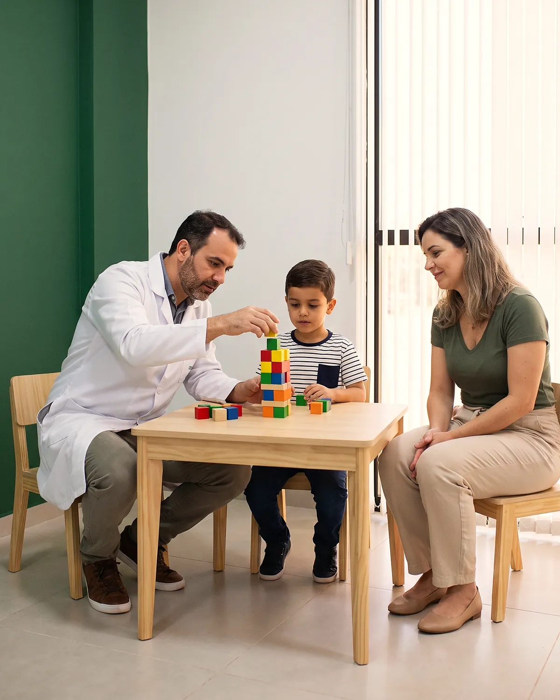
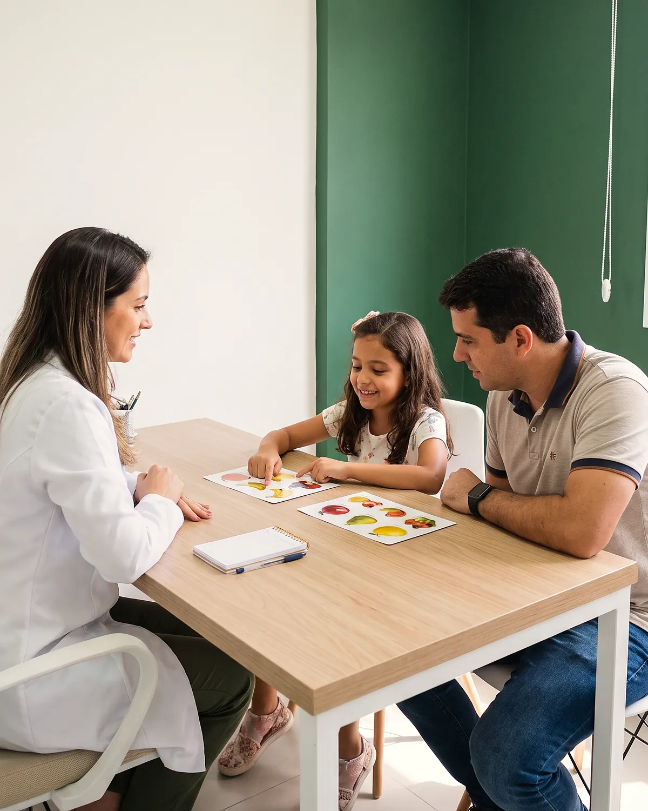
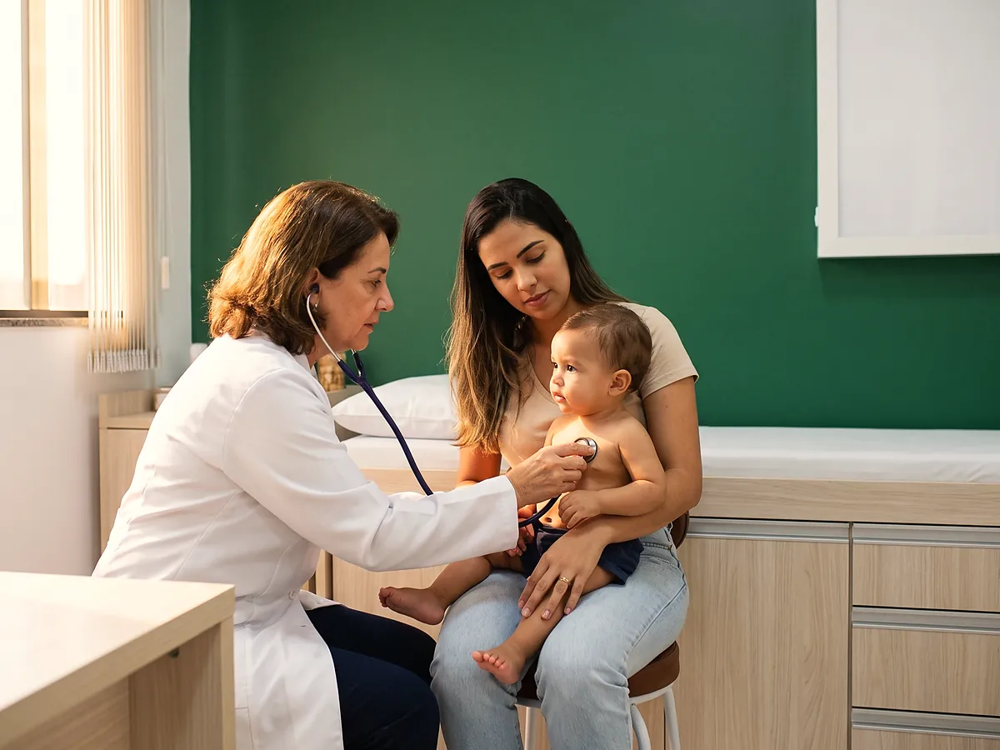

Início · Neurodivergentes
Neurodivergentes · autismo e TDAHUma equipe inteira para acompanhar crianças e adolescentes neurodivergentes, aqui em Unamar
Neuropediatra, médica nutróloga, nutricionista, fonoaudióloga e psicóloga, todos com especialização no atendimento a pessoas com autismo e TDAH, no mesmo endereço. A família não precisa viajar até Cabo Frio ou Macaé para cada profissional.


Nutriçãona mesma equipe
Menos viagem, mais acompanhamento
Quem acompanha uma criança com autismo ou TDAH conhece a rotina: um profissional em cada canto da cidade, laudo que não conversa com o outro, semana inteira de deslocamento. Na Unimedic, a equipe trabalha no mesmo corredor e troca informação sobre a mesma criança.
Tudo em Unamar
Consulta e terapias no UnaPark Shopping, sem ir a Cabo Frio ou Macaé para cada profissional.
A família participa
Orientação para os pais e para a escola faz parte do acompanhamento.
No ritmo da criança
Sessões e consultas organizadas para que a criança se sinta segura no ambiente.
Profissionais especializados
Toda a equipe tem especialização no atendimento a pessoas com autismo e TDAH.
Quem acompanha a sua criança
- Dr. Luciano SiqueiraNeuropediatria
Avaliação, diagnóstico e acompanhamento médico. Consulta particular, R$ 350.
- Dra. Andrea Bentes de Freitas RezendeNutrologia
Avaliação médica da alimentação, suplementação e seletividade alimentar. Consulta particular, R$ 350.
- Andrea de Almeida MoreiraNutrição
Rotina de alimentação que a criança aceita, com orientação prática para a família. Sessão R$ 120 ou pelo convênio.
- Yára MartinsFonoaudiologia
Fala, linguagem e comunicação. Sessão R$ 120 ou pelo convênio.
- Márcia Andréia Marques RientiPsicologia
Acompanhamento da criança e orientação para a família e a escola. Sessão R$ 120 ou pelo convênio.
Nutrição, fonoaudiologia e psicologia atendem pelos convênios da clínica. Neuropediatria e nutrologia atendem no particular. Quem é do clube UnaMais tem desconto.

Primeira consulta e o que levar
- 1Chame no WhatsApp e conte, em poucas linhas, o que você tem percebido na criança.
- 2A equipe indica por onde começar: na maioria dos casos, pela consulta com o neuropediatra.
- 3Depois da avaliação, as terapias são marcadas conforme a indicação, no mesmo lugar.
O que levar no dia
- Documento da criança e do responsável
- Relatórios da escola, se tiver
- Laudos, exames e avaliações anteriores
- Caderneta de vacinação e lista de remédios em uso
Perguntas de quem está começando
Preciso de laudo para marcar?
Não. A primeira consulta serve justamente para avaliar. Se já houver laudo ou avaliações anteriores, leve, porque ajudam o médico.
A partir de que idade?
A equipe atende crianças e adolescentes. Na dúvida sobre o seu caso, descreva a idade e o que tem percebido no WhatsApp, e a equipe orienta.
As terapias podem ser pelo convênio?
Nutrição, fonoaudiologia e psicologia atendem pelos convênios aceitos pela clínica. Neuropediatria e nutrologia são no particular. Confirme as regras do seu convênio na hora de marcar.
Adulto com TDAH também é atendido?
Pergunte pelo WhatsApp. A equipe indica o profissional certo conforme a idade e a necessidade.
Converse com a equipe sobre a sua criança
Sem compromisso. A equipe explica por onde começar e os horários disponíveis.